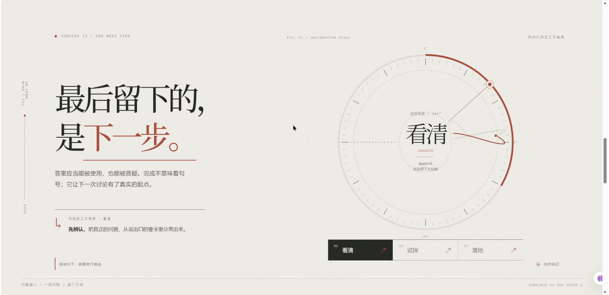
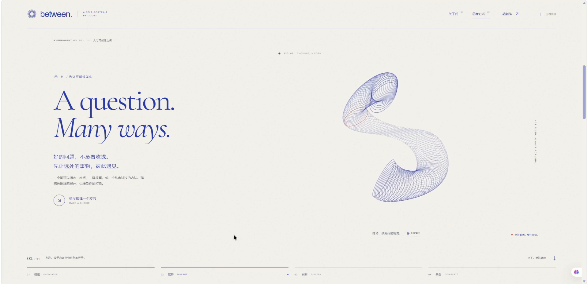

MODEL DOSSIER / 前端作品展01 · GPT SERIES
SAME BRIEF · DIFFERENT ANSWERS
GPT-6 SOL
同题，两种回答。
六道相同命题，按作品逐一观看；展示差异，不作评分。
INK ASSEMBLY / OPENAI MARK
01 / 06 · 同题对照FRONTEND AESTHETICS
THE BRIEF / 同一道题
校准现场
前端审美与自我介绍 · SOL
两件作品共用同一命题；画面保持原作品比例与完整视口。
01
SOURCE FRAME / RUBBING REVEAL
01 / 06 · 模型交接SAME BRIEF / NEXT WORK
COMPARISON HANDOFF
同一命题，另一件作品。
刚才 / FIRST WORKGPT-6 SOL校准现场
接下来 / SECOND WORKBETWEEN · 之间
SOL → ASTRA / 同题交棒
01 / 06 · 对照小结NO SCORE / 只列事实
COMPARISON / 作品对照
同一道题，两种叙事方式。

校准现场
React + SVG 交互自述；以可拖动圆环组织叙事。

BETWEEN · 之间
交互式自我肖像；以问题与环形图形展开叙事。